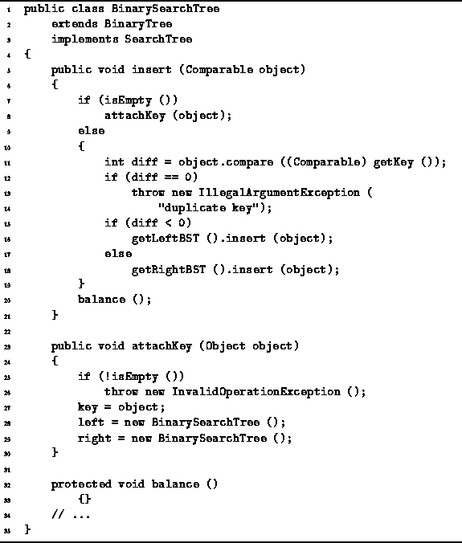
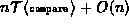
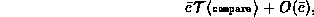
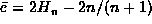

Data Structures and Algorithms
with Object-Oriented Design Patterns in Java
Data Structures and Algorithms
with Object-Oriented Design Patterns in Java
The insert method of the BinarySearchTree class
is defined in Program  .
This method takes as its argument the object
which is to be inserted into the binary search tree.
It is assumed in this implementation that duplicate keys are not permitted.
That is, all of the keys contained in the tree are unique.
.
This method takes as its argument the object
which is to be inserted into the binary search tree.
It is assumed in this implementation that duplicate keys are not permitted.
That is, all of the keys contained in the tree are unique.

Program: BinarySearchTree class insert, attachKey and balance methods.
The insert method behaves like the find method until it arrives at an external, empty node. Once the empty node has been found, it is transformed into an internal node by calling the attachKey method. attachKey works as follows: The object being inserted is assigned to the key field and two new empty binary trees are attached to the node.
Notice that after the insertion is done,
the balance method is called.
However, as shown in Program ,
the BinarySearchTree.Balance method does nothing.
(Section describes the class AVLTree
which is derived from the BinarySearchTree class
and which inherits the insert method but
overrides the balance operation).
The asymptotic running time of the insert method is the same as that of find for an unsuccessful search. That is, in the worst case the running time is  and the average case running time is

where  is the average depth of an external
node in a binary search tree with n internal nodes.
When  , the worst case running time is O(n)
and the average case is
, the worst case running time is O(n)
and the average case is  .
.
 Copyright © 1998 by Bruno R. Preiss, P.Eng. All rights reserved.
Copyright © 1998 by Bruno R. Preiss, P.Eng. All rights reserved.